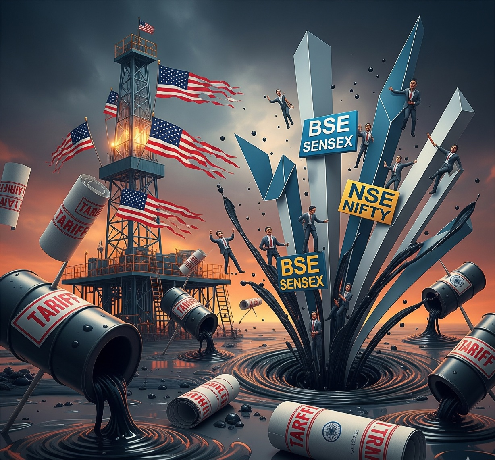
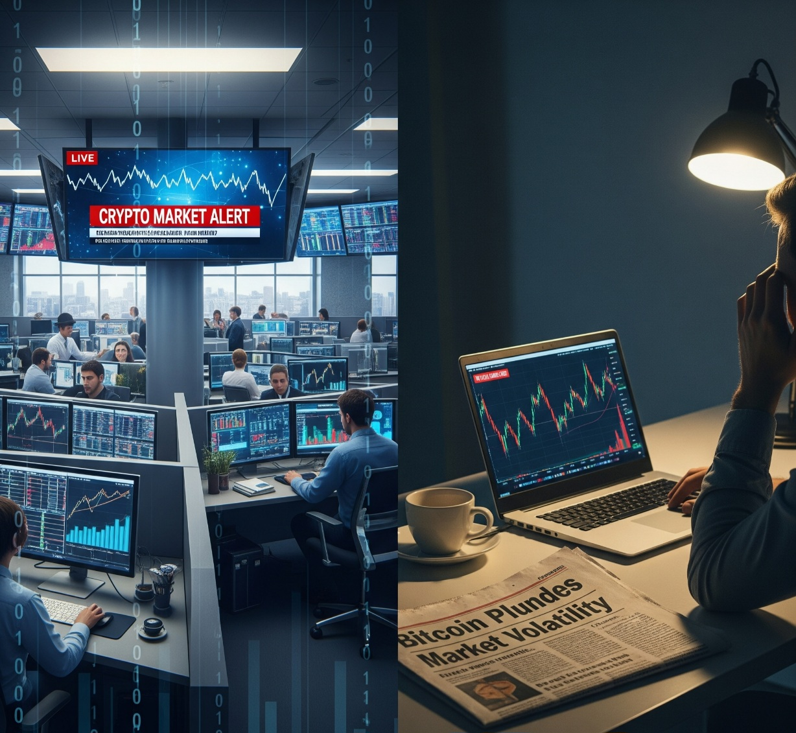
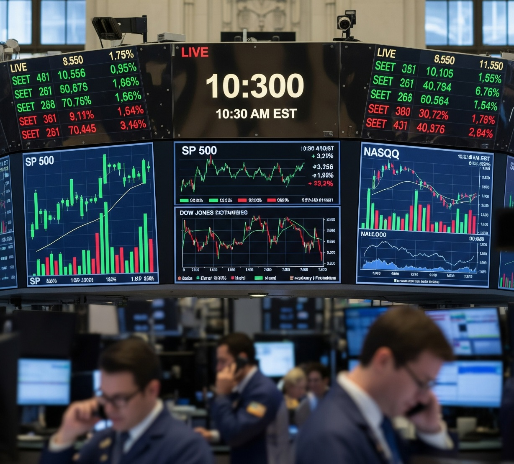

सेंसेक्स टुडे | शेयर बाजार LIVE अपडेट्स: निफ्टी 24,550 की ओर चढ़ा; यूबीएस अपग्रेड के बाद कोटक बैंक ऊपर



सेंसेक्स टुडे | शेयर बाजार LIVE अपडेट्स: पिछले चार सत्रों में निफ्टी में लगभग 600 अंकों की गिरावट आई है, जबकि निफ्टी बैंक इससे भी खराब प्रदर्शन करते हुए लगभग 2,000 अंक गिरा है। निफ्टी अब न केवल 24,500 के महत्वपूर्ण स्तर पर है, बल्कि 8 अगस्त के 24,337 के निचले स्तर से शुरू हुई रैली का 78.6% रिट्रेसमेंट भी है।
सेंसेक्स टुडे | शेयर बाजार LIVE अपडेट्स: शुक्रवार से निफ्टी 50 के लिए एक नई F&O श्रृंखला शुरू हो रही है, और यह बदलावों से भरी एक श्रृंखला भी है। इस श्रृंखला से, एनएसई साप्ताहिक अनुबंधों की समाप्ति मंगलवार को होगी, जबकि बीएसई के अनुबंधों की समाप्ति गुरुवार को होगी।
बुलों को एक और बदलाव की उम्मीद है, जो वर्तमान में जारी बिकवाली की लहर में बदलाव है, खासकर बुधवार से भारत से अमेरिकी निर्यात पर 50% टैरिफ लागू होने के बाद। पिछले चार सत्रों में निफ्टी में लगभग 600 अंकों की गिरावट आई है, जबकि निफ्टी बैंक इससे भी खराब प्रदर्शन करते हुए लगभग 2,000 अंक गिरा है।
निफ्टी अब न केवल 2400 बल्कि 8 अगस्त के 24,337 के स्विंग लो से 21 अगस्त के 21,153 के स्विंग हाई तक देखी गई रैली का 78.6% रिट्रेसमेंट भी है, जो 24,512 पर आता है। यह, गुरुवार के 24,482 के निचले स्तर के साथ, सूचकांक के लिए डाउनसाइड पर महत्वपूर्ण स्तर होगा।
आज का दूसरा प्रमुख कारक रिलायंस इंडस्ट्रीज की एजीएम होगी, और गुरुवार को बैठक से पहले स्टॉक में तेज इंट्राडे रिकवरी देखी गई थी, जो आज दोपहर 2 बजे निर्धारित है। इसके अलावा, जीएसटी-संबंधित स्टॉक खबरों के कारण फोकस में बने हुए हैं, जो सभी CNBC-TV18.com पर पढ़े जा सकते हैं।
सभी लाइव अपडेट्स के लिए इस जगह पर नजर रखें।
लाइव अपडेट्स
सेंसेक्स टुडे | शेयर बाजार LIVE अपडेट्स: डी.आर. चोकसी फिनसर्व का जीएसटी रीजिग पर बयान
मार्केट वॉच: देवेन चोकसी, डी.आर. चोकसी फिनसर्व
जीएसटी पर
- हम इस समय ऑटो, ऑटो सहायक कंपनियों के साथ अधिक सहज हैं। हमारा मानना है कि गतिविधि के इस विशेष क्षेत्र में विकास के लिए एक अंतर्निहित प्रस्ताव है, जिसके दो कारक हैं।
- पहला, व्यक्तियों के पास अधिक मात्रा में डिस्पोजेबल अधिशेष, और दूसरा कम ब्याज लागत, जो मूल रूप से लोगों को उधार के माध्यम से पैसा खर्च करने की अनुमति दे रही है, जहां तक वाहन खरीदने का संबंध है।
- और इसके अलावा, यदि किसी को कम जीएसटी का लाभ मिल रहा है, विशेष रूप से कुछ चार पहिया वाहनों, ओईएम के प्रीमियम मॉडलों में, तो मेरा मानना है कि यह संभवतः इनमें से कुछ कंपनियों के लिए लाभप्रदता का एक बड़ा प्रतिशत संकेत दे सकता है क्योंकि उन्हें जीएसटी लाभ के कारण कुछ हद तक मूल्य निर्धारण शक्ति मिल रही होगी।
सेंसेक्स टुडे | शेयर बाजार LIVE अपडेट्स: बाजार का खुलना
सेंसेक्स टुडे | शेयर बाजार LIVE अपडेट्स: इन शेयरों पर रखें नजर
सेंसेक्स टुडे | शेयर बाजार LIVE अपडेट्स: संवर्धना मदरसन अधिग्रहण अपडेट्स
संवर्धना मदरसन 184 मिलियन डॉलर में युटाका गिकेन में 81% और शिनिची कोग्यो में 11% हिस्सेदारी खरीदेगी।
सेंसेक्स टुडे | शेयर बाजार LIVE अपडेट्स: सामही होटल्स फोकस में
जीएसटी में कटौती: सामही का 45% राजस्व ₹7500 से कम के कमरों से आता है।
सामही के अनुसार, यदि जीएसटी को 5% (≤ ₹7,500/रात) तक कम किया जाता है तो उन्हें अपने राजस्व में 10-15% की वृद्धि की उम्मीद है।
सेंसेक्स टुडे | शेयर बाजार LIVE अपडेट्स: डॉ. अग्रवाल के शेयर फोकस में क्यों हैं, यहाँ जानें
डॉ. अग्रवाल हेल्थ केयर लिमिटेड के शेयर, जो गुरुवार को 7% गिरे थे, शुक्रवार (29 अगस्त) के ट्रेडिंग सत्र में फोकस में रहने की उम्मीद है।
वैश्विक ब्रोकरेज फर्म मॉर्गन स्टेनली ने स्टॉक पर 'ओवरवेट' रेटिंग दी है, जिसका मूल्य लक्ष्य ₹494 है, जो गुरुवार के बंद स्तर से लगभग 12% की संभावित वृद्धि का संकेत देता है।
सेंसेक्स टुडे | शेयर बाजार LIVE अपडेट्स: स्टैंडर्ड चार्टर्ड बैंक सीएनबीसी-टीवी18 से बात करता है
फुक हिएन याप, सीनियर इन्वेस्टमेंट स्ट्रैटेजिस्ट, स्टैंडर्ड चार्टर्ड बैंक ऑन सीएनबीसी-टीवी18
- हम भारतीय बाजार को एक अच्छा मध्यम अवधि का होल्डिंग मान रहे हैं।
- चीन और कोरिया को पसंद करते हैं जहां मूल्यांकन आकर्षक हैं।
- हमें कमाई की गति में वृद्धि देखने की जरूरत है।
- टैरिफ का सीधा प्रभाव ज्यादा चिंता का विषय नहीं है।
- भारतीय कंपनियों का राजस्व और कमाई घरेलू स्तर पर केंद्रित है।
- कर और अन्य सुधार खपत के लिए सहायक हैं।
- एआई और नीतिगत सुधारों पर चीन की फिर से रेटिंग हो रही है; कोरिया आकर्षक मूल्यांकन प्रदान करता है।
- इसलिए इन दोनों बाजारों में भारत की तुलना में निकट भविष्य में मजबूत गति देखने को मिल सकती है।
सेंसेक्स टुडे | शेयर बाजार LIVE अपडेट्स: इंडिगो पर सूत्रों का बयान
इंडिगो पर सूत्र
- डीजीसीए ने तुर्की एयरलाइंस के साथ अपने वेट लीज समझौते के विस्तार के लिए इंडिगो के अनुरोध को स्वीकार किया।
- तुर्की एयरलाइंस के साथ 2 बोइंग 777 विमानों के वेट लीज समझौते को जारी रखने के लिए और विस्तार प्राप्त हुआ।
- मई 30 को डीजीसीए द्वारा दी गई लीज के लिए 3 महीने का विस्तार 31 अगस्त को समाप्त होने वाला था।
इंडिगो ने कहा
तुर्की एयरलाइंस से लीज पर लिए गए बोइंग 777 के विस्तार की पुष्टि।
2 बोइंग 777 विमानों का वेट लीजिंग विस्तार भारतीय विमानन को होने वाले नुकसान को कम करने में मदद करेगा।
सेंसेक्स टुडे | शेयर बाजार LIVE अपडेट्स: निफ्टी सितंबर F&O सेटअप
निफ्टी 50 सूचकांक लगातार दो घाटे वाली श्रृंखलाओं के बाद सितंबर श्रृंखला में प्रवेश कर रहा है। अगस्त भी सूचकांक के लिए नकारात्मक नोट पर समाप्त हुआ क्योंकि अमेरिकी प्रशासन द्वारा बुधवार को 50% टैरिफ की धमकी लागू होने के बाद इसने आगे की गिरावट के रास्ते में महत्वपूर्ण समर्थन स्तरों को छोड़ दिया।
सेंसेक्स टुडे | शेयर बाजार LIVE अपडेट्स: शुक्रवार के लिए बाजार के संकेत
सेंसेक्स टुडे | शेयर बाजार LIVE अपडेट्स: नजर रखने योग्य शेयर
सेंसेक्स टुडे | शेयर बाजार LIVE अपडेट्स: मॉर्गन स्टेनली का ऑटो सेक्टर पर बयान
सेंसेक्स टुडे | शेयर बाजार LIVE अपडेट्स: जेफरीज का टेलीकॉम पर बयान
सेंसेक्स टुडे | शेयर बाजार LIVE अपडेट्स: मॉर्गन स्टेनली का डॉ. अग्रवाल'स आई पर बयान
सेंसेक्स टुडे | शेयर बाजार LIVE अपडेट्स: चीन का मासिक स्टॉक टर्नओवर रिकॉर्ड के लिए तैयार
चीन का शेयर बाजार इस महीने रिकॉर्ड टर्नओवर की ओर बढ़ रहा है, जो एक बुल रन की तीव्रता को दर्शाता है जो दिन-ब-दिन अधिक निवेशकों को आकर्षित कर रहा है।
ब्लूमबर्ग-संकलित आंकड़ों के अनुसार, इस महीने अब तक का औसत टर्नओवर वॉल्यूम 2.2 ट्रिलियन युआन ($309 बिलियन) है, जिसने सरकार के प्रोत्साहन के बाद अक्टूबर में निर्धारित 2 ट्रिलियन युआन के पिछले उच्च को पार कर लिया है।
सेंसेक्स टुडे | शेयर बाजार LIVE अपडेट्स: जीएसटी क्षतिपूर्ति उपकर पर मंत्रियों का समूह विभाजित, दो विकल्प संभव
सूत्रों के अनुसार, क्षतिपूर्ति उपकर को बदलने के तंत्र पर मंत्रियों का समूह (जीओएम) विभाजित है। पैनल विचार के लिए दो विकल्प प्रस्तावित करने की संभावना है।
सेंसेक्स टुडे | शेयर बाजार LIVE अपडेट्स: ग्रो का पैरेंट बिलियनब्रेन्स गैराज वेंचर्स को आईपीओ के लिए सेबी की मंजूरी मिली
स्टॉकब्रोकिंग प्लेटफॉर्म ग्रो (Groww) के पैरेंट बिलियनब्रेन्स गैराज वेंचर्स को गुरुवार (28 अगस्त) को अपने आईपीओ को लॉन्च करने के लिए सेबी की मंजूरी मिल गई है, जिसके माध्यम से इसका लक्ष्य $700 मिलियन से $1 बिलियन जुटाना है। कंपनी का प्रस्तावित आईपीओ इक्विटी शेयरों के एक नए इश्यू और बिक्री के लिए एक ऑफर (ओएफएस) घटक का संयोजन है।
सेंसेक्स टुडे | शेयर बाजार LIVE अपडेट्स: एक महीने में 134% की रैली के बाद खुद एक कंपनी ने ट्रेडरों को जोखिमों से चेताया
एक महीने में शेयरों का दोगुना होना अब कोई आश्चर्य की बात नहीं है, हालांकि ऐसी घटना अभी भी ध्यान आकर्षित करती है। लेकिन एक चीनी एआई कंपनी ने खुद अपने स्टॉक में ऐसी रैली के बाद ट्रेडरों को चेतावनी देने का फैसला किया है।
सेंसेक्स टुडे | शेयर बाजार LIVE अपडेट्स: नजर रखने योग्य शेयर
आईसीसीआई बैंक, इंफोसिस, मुथूट फाइनेंस, हेक्सावेयर और लेमन ट्री होटल्स आज प्रमुख कॉर्पोरेट अपडेट्स, जैसे नेतृत्व परिवर्तन, साझेदारी, इक्विटी निवेश और नए प्रॉपर्टी लॉन्च के कारण फोकस में हैं।
सेंसेक्स टुडे | शेयर बाजार LIVE अपडेट्स: डॉम्स इंडस्ट्रीज, नवनीत एजुकेशन के शेयर फोकस में, यहाँ जानें क्यों
डॉम्स इंडस्ट्रीज लिमिटेड और नवनीत एजुकेशन लिमिटेड के शेयर शुक्रवार को फोकस में रहेंगे।
सेंसेक्स टुडे | शेयर बाजार LIVE अपडेट्स: फेड गवर्नर वालर ने सितंबर में 25 बीपीएस दर कटौती, उसके बाद और अधिक कटौती का अनुमान लगाया
फेडरल रिजर्व के गवर्नर क्रिस्टोफर वालर ने फिर से कम ब्याज दरों का आह्वान किया, और कहा कि वह सितंबर में एक चौथाई-प्रतिशत अंक की कमी का समर्थन करेंगे और अगले तीन से छह महीनों में अतिरिक्त कटौतियों का अनुमान लगाते हैं।
सेंसेक्स टुडे | शेयर बाजार LIVE अपडेट्स: लिसा कुक ने 'लिपिकीय त्रुटि' को गिरवी विवाद के पीछे बताया
फेडरल रिजर्व की गवर्नर लिसा कुक के वकीलों ने सुझाव दिया कि एक अनजाने में हुई "लिपिकीय त्रुटि" उस गिरवी विवाद के पीछे हो सकती है, जिसके कारण राष्ट्रपति डोनाल्ड ट्रम्प उन्हें बर्खास्त करना चाहते हैं।
सेंसेक्स टुडे | शेयर बाजार LIVE अपडेट्स: मुद्रास्फीति के आंकड़ों की तैयारी के साथ सोने की कीमतें रिकॉर्ड के करीब पहुंची
सोना लगातार साप्ताहिक लाभ की ओर बढ़ रहा है, जिसने इसे रिकॉर्ड उच्च स्तर के करीब धकेल दिया है, क्योंकि निवेशक मुद्रास्फीति रीडिंग के लिए तैयार थे जो इस वर्ष अमेरिकी मौद्रिक सहजता के लिए महत्वपूर्ण साबित हो सकती है।
संपादक का बयान | प्रशांत नायर ने बाजार पर अपने विचार साझा किए
ट्रेड सेट अप
- मजबूत आर्थिक आंकड़ों के बाद अमेरिकी इक्विटी रिकॉर्ड ऊंचाई पर पहुंची
- अंतिम क्लोज सत्र के निचले स्तर से ऊपर था; एसपीएक्स +0.32%, नैस्डेक +0.53%
- यूएसटी 10 साल की उपज -3 बीपीएस से 4.21% पर, तेल 0.4% बढ़कर $68.34 पर
- अमेरिकी Q2 जीडीपी 3% से 3.3% तक संशोधित किया गया, बेरोजगार दावों का डेटा भी अच्छा था
- डॉलर इंडेक्स -0.5% से 97.90 पर, 50-दिवसीय एमए 98-स्तर के करीब है
- फेड गवर्नर लिसा कुक ने ट्रम्प को बर्खास्त करने की चाल को रोकने के लिए आज एक मुकदमा दायर किया
- आगे क्या: जुलाई कोर पीसीई मुद्रास्फीति (फेड का पसंदीदा मुद्रास्फीति गेज)
- श्रम दिवस की छुट्टी के लिए सोमवार को अमेरिकी नकद बाजार बंद, वायदा जल्दी बंद
- मासिक समाप्ति के बाद बाजार की स्थिति अपरिवर्तित रही
- एफ.आई.आई. ने इक्विटी में 4.4 बिलियन डॉलर और इंडेक्स शॉर्ट्स में 600 मिलियन डॉलर डंप किए, जबकि डी.आई.आई. ने 9.5 बिलियन डॉलर खरीदे
- रिटेल 450 मिलियन डॉलर इंडेक्स लॉन्ग्स के साथ उत्साहित रहा
- निफ्टी 20-दिवसीय एमए से मजबूती से नीचे बंद हुआ
- निफ्टी 24,337 के पास निचले बैंड की ओर बढ़ा
- बैंक निफ्टी साप्ताहिक निचले बैंड 53,563 के करीब बंद हुआ
- बैंक निफ्टी का समर्थन 52,692 पर (50% रिट्रेसमेंट)
- बैंक निफ्टी का 20-दिवसीय एमए 55,370 पर चल रहा है
सेंसेक्स टुडे | शेयर बाजार LIVE अपडेट्स: गिफ्ट निफ्टी उच्च कारोबार कर रहा है, सकारात्मक शुरुआत का संकेत
सेंसेक्स टुडे | शेयर बाजार LIVE अपडेट्स: कच्चे तेल की कीमतें अधिशेष की चिंताओं के कारण मासिक नुकसान के लिए तैयार
तेल मासिक नुकसान के लिए थोड़ा नीचे चला गया, क्योंकि निवेशकों ने एक आसन्न अधिशेष के साथ-साथ भू-राजनीतिक तनावों के बारे में चिंताओं को तौला, जिसमें यूक्रेन में युद्ध को समाप्त करने के लिए अमेरिकी नेतृत्व वाले प्रयास शामिल हैं।
सेंसेक्स टुडे | शेयर बाजार LIVE अपडेट्स: मजबूत जीडीपी प्रिंट के बाद डॉव जोन्स निचले स्तर से लगभग 200 अंक रिकवर हुआ
वॉल स्ट्रीट पर अमेरिकी बेंचमार्क सूचकांक गुरुवार को मजबूत-से-अपेक्षित जीडीपी प्रिंट और पिछले सप्ताह के शुरुआती बेरोजगार दावों में कुछ सुधार से प्रेरित होकर उच्च स्तर पर समाप्त हुए। हालांकि, सत्र आउटसाइज़्ड, ट्रेंडिंग लाभ के बजाय शुरुआती निचले स्तरों से रिकवरी के बारे में अधिक था।
Welcome to Our Blog
What is the 3-5-7 Rule in Trading?
The "3-5-7 rule" in trading is a risk management strategy that limits how much capital is risked on a single trade, across all open trades, and aims for a specific profit target. Specifically, it advises never risking more than 3% of your trading capital on a single trade, keeping total open trade exposure under 5%, and targeting a minimum 7% profit on winning trades.
- 3% Rule: Limit the maximum loss on any single trade to 3% of your total trading capital. For example, if you have a $10,000 account, you wouldn't risk more than $300 on a single trade.
- 5% Rule: Keep total exposure across all open trades to 5% of your capital. For a $10,000 account, this means not exceeding $500 in total exposure.
- 7% Rule: Aim for a minimum profit target of 7% on winning trades. If you risk $300, aim for at least $21 in profit.
This rule promotes disciplined trading, prevents over-exposure, and helps improve your risk-reward ratio.
🧠 How to Build a Trading Mindset
Trading is 90% psychology. By understanding and managing emotions, avoiding common pitfalls, and embracing your personal strengths, you can strengthen your mindset. Through discipline, self-awareness, and emotional intelligence, you can unlock the potential of your trader DNA and develop a winning trading mindset.
🚫 Top 10 Common Mistakes New Traders Make
- Not researching the markets properly
- Trading without a plan
- Over-reliance on software
- Failing to cut losses
- Overexposing a position
- Overdiversifying a portfolio too quickly
- Not understanding leverage
- Not understanding the risk-reward ratio
- Overconfidence after a profit
- Letting emotions impair decision-making
✅ Final Thoughts
Avoiding common pitfalls can fast-track your success. Here are a few key takeaways:
- Clearly define your goals and create a solid trading plan.
- Cultivate a resilient mindset and learn from past mistakes.
- Seek support, stay adaptable, and commit to continuous learning.